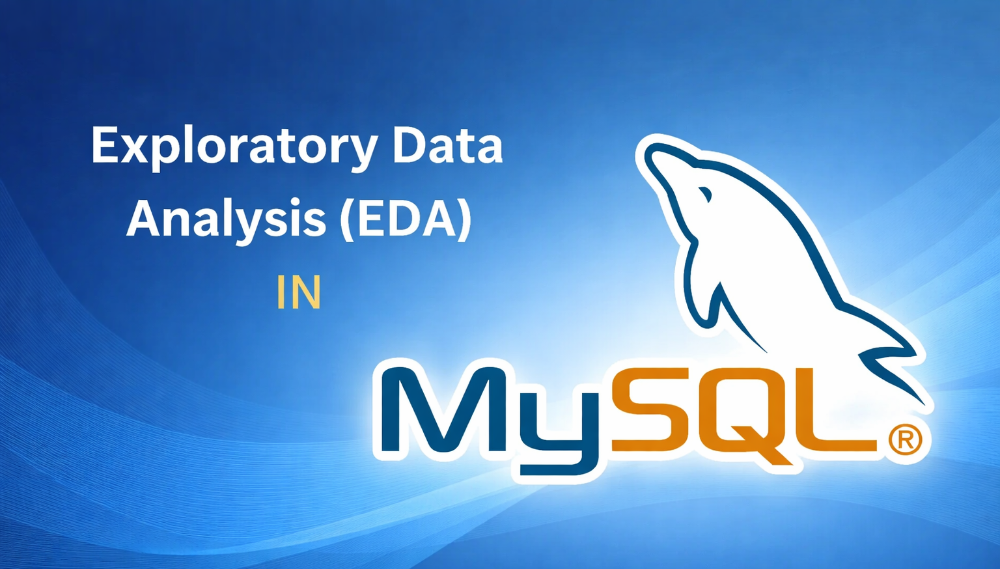
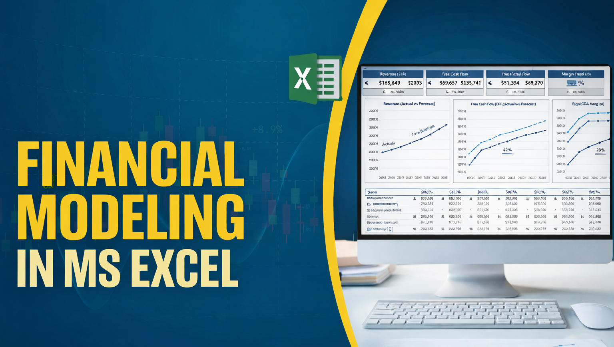

I am an MBA-trained Data Analyst with a strong foundation in finance, focused on using data to support better
business decisions. My experience spans financial analysis, data analytics, and dashboard development, where I translate
complex datasets into clear, actionable insights for stakeholders.
Through academic projects and professional experience, I’ve worked with tools such as SQL, Python, Power BI, Tableau, and
Excel to create stories that inform strategy. I enjoy working at the intersection of
data/finance and analytics, where curiosity, structure, and critical thinking come together to drive impact.


A Python-based analysis of customer purchasing behavior in an online electronics retail setting that identifies key value drivers and uncover
behavior-driven customer segments using supervised and unsupervised machine learning techniques.
The project translates predictive insights into actionable recommendations for targeted marketing
and profitability optimization.

A Power BI–driven analysis of ride-hailing performance using a 2024 Uber dataset from India, uncovering key operational drivers across bookings,
revenue, cancellations, and customer experience. The project delivers an interactive dashboard that converts complex ride-level data into actionable
insights for optimizing platform operations and service efficiency.
An SQL-based data cleaning and standardization project transforming raw global layoff records into a structured, analysis-ready dataset by resolving duplicates,
inconsistencies, null values, and formatting issues using real-world data quality techniques.

An SQL-based exploratory data analysis project summarizing global layoff data across companies, industries, countries, and time to identify distribution patterns
and historical trends.

An Excel-based financial modeling project featuring an integrated Income Statement, Balance Sheet, and Cash Flow Statement. The model applies structured assumptions, links
core financial statements, and includes supporting schedules and a dashboard to evaluate company performance and financial position.
An Excel-based data analysis project analyzing customer demographics and purchasing behavior for bike sales. The dashboard explores income, age brackets, commute distance, education,
and regional patterns using cleaned data, Pivot Tables, and interactive visualizations to support structured, insight-driven analysis.

A Discounted Cash Flow (DCF) valuation model built in Excel to estimate a retail company’s intrinsic enterprise value. The model projects unlevered free cash flows (2019A–2026E),
incorporates capital expenditure and working capital assumptions, and applies WACC and terminal value analysis to assess long-term financial performance.